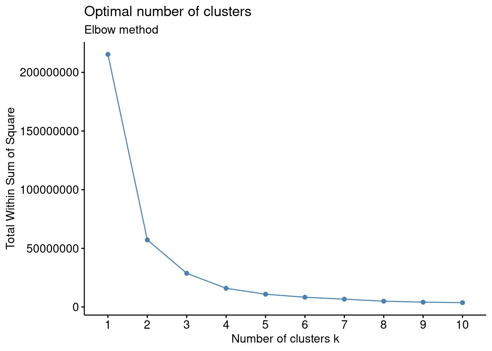
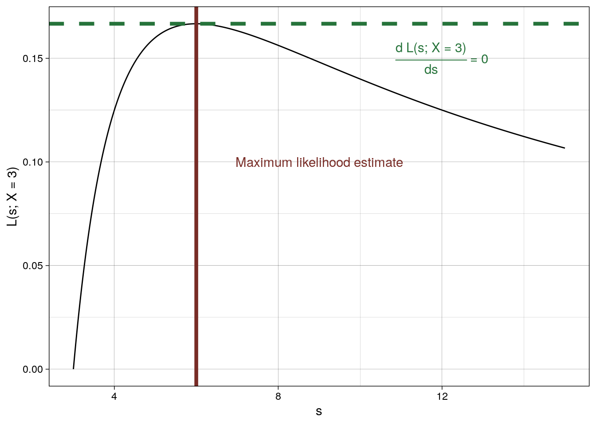
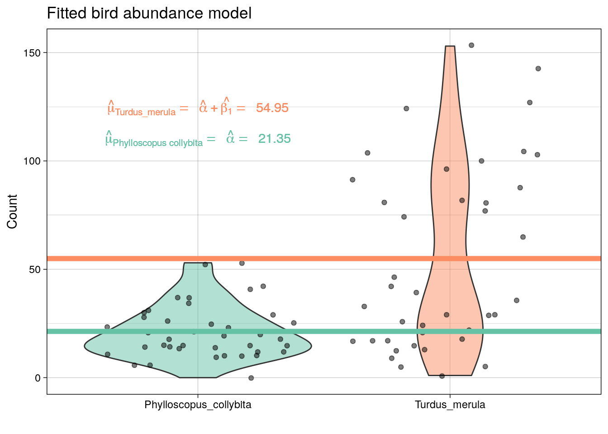

Maximum likelihood estimation
Under the assumptions of a linear model then maximum likelihood estimation is equivalent to least squares. However, (as we’ll see in a later module) we often need to be more flexible!
Differeniation rules
This section is a recap only, if you need a more in-depth overview of differentiation then use the extra materials provided at the start of this module.
The constant factor rule
\[(af(x))'=af'(x)\] The sum rule
\[(f(x)+g(x))'=f'(x)+g'(x)\] The subtraction rule
\[(f(x) - g(x))'=f'(x) - g'(x)\]
The product rule
For the functions \(f\) and \(g\), the derivative of the function \(h(x) = f(x)g(x)\) with respect to \(x\) is
\[h'(x) = (fg)'(x) = f'(x)g(x) + f(x)g'(x)\]
The chain rule
The derivative of the function \(h(x)=f(g(x))h(x)=f(g(x))\) is
\[h'(x)=f'(g(x)\cdot g'(x)\]
In summary, for any functions \(f\) and \(g\) and any real numbers \(a\) and \(b\), the derivative of the function \(h(x) = a f(x)+bg(x)\) with respect to \(x\) is \(h'(x)=af'(x) + bg'(x).\)
Logarithm rules
This section is a recap only, if you need a more in-depth overview of log rules then use the extra materials provided at the start of this module.
- Product rule: \(\text{log}(xy) = \text{log}(x) + \text{log}(y)\)
- Quotient rule: \(\text{log}(x/y)=\text{log}(x)−\text{log}(y)\)
- Log of power: \(\text{log}(x^y)=y\text{log}(x)\)
- Log of e: \(\text{log}(e)=1\)
- Log of one: \(\text{log}(1)=0\)
- Log reciprocal: \(\text{log}(1/x)=−\text{log}(x)\)
- Differentiating a log: \(\frac{\delta \text{log}(y)}{\delta x} = \frac{1}{y}\frac{\delta y}{\delta x}.\)
Maximum likelihood estimation for a Binomial distribution
The process of using observations to suggest a value for a parameter is called estimation. The value suggested is called the estimate of the parameter.
Let us consider data from the published article Influence of predator identity on the strength of predator avoidance responses in lobsters..
The authors were interested in how a juvenile lobster’s size was related to its vulnerability to predation. In total, 159 juvenile lobsters were collected from their natural habitat in the Gulf of Maine, USA, and the length of each lobster’s carapace (upper shell) was measured to the nearest 3 mm. The lobsters were then tethered to the ocean floor for 24 hours. Any missing lobsters were assumed to have been consumed by a predator, while the surviving lobsters were released.
library(tidyverse)
data <- read_csv("https://raw.githubusercontent.com/STATS-UOA/databunker/master/data/lobster.csv")
data %>%
mutate(survived = ifelse(survived == 0, "consumed", "alive")) %>%
group_by(survived) %>%
tally() %>%
pivot_wider(names_from = c(survived), values_from = n)## # A tibble: 1 × 2
## alive consumed
## <int> <int>
## 1 79 80So, 79 of the small juvenile lobsters survived predation from a total of 159. We are interested in the probability of survival, \(\theta\), for the general population. The obvious estimate is simply to take the ratio, \(\frac{\text{number surviving juveniles}}{\text{total number juveniles}} = \frac{79}{159} = 0.4968553\)!!
There are, however, many situations where our common sense fails us. For example, what would we do if we had a regression-model situation as in Module 2 and would like to specify an alternative form for \(\theta\), such as
\[\theta = \alpha + \beta \times (\text{lobster species}).\]
How would we estimate the unknown intercept \(\alpha\) and slope(s) \(\beta\), assuming we had information on lobster species etc. For this we need a general framework for estimation that can be applied to any situation. The most useful and general method of obtaining parameter estimates is the method of maximum likelihood estimation. I mean the title of this section was a bit of a giveaway!
The Likelihood
The likelihood function, \(L(\theta ; x)\) is a function of the parameter(s) \(\theta\) for fixed data \(x\) and it gives the probability of a fixed observation \(x\) for every possible value of the parameter(s) \(\theta\), \(P(X = x)\).
From above, letting \(S\) be the number of lobsters alive after the 24 hours we can assume a Binomial distribution:
\[L(\theta ; s) = P(S = s) = {n \choose s} \theta^s (1 - \theta)^{n-s}.\]
To obtain the maximum likelihood estimate (i.e., the best guess for \(\theta\) given the observed data) we need to differentiate the likelihood. That is, find it’s rate of change given data \(x\), \(\frac{\delta L}{\delta \theta}\) . We are interested in the best guess for \(\theta\); this occurs at the point when the rate of change of our likelihood is zero (i.e., \(\frac{\delta L}{\delta \theta} = 0\))
Using the product rule we differentiate \(L(\theta ; s)\):
\[ \begin{array}{cl} \frac{\delta L}{\delta \theta} &= {n \choose s}\left( s\theta^{s-1} (1 - \theta)^{n-s} + \theta^s (n-s) (1 - \theta)^{n-s-1}(-1) \right)\\ &= (1 - \theta)^{n-s-1}\theta^{s-1}\{s(1-\theta) - (n-s)\theta\} \\ &= (1 - \theta)^{n-s-1}\theta^{s-1}\{s - s\theta - n\theta + s\theta \}\\ &= (1 - \theta)^{n-s-1}\theta^{s-1}\{s - n\theta \}. \end{array}\]
Setting \(\frac{\delta L}{\delta \theta} = 0\) and solve for \(\theta\):
\[\frac{\delta L}{\delta \theta} = (1 - \theta)^{n-s-1}\theta^{s-1}\{s - n\theta \} = 0.\] There are, technically, three possible solutions to this:
- when \(\theta^{s-1} = 0 \rightarrow \theta = 0\),
- when \(s - n\theta = 0 \rightarrow\theta = \frac{s}{n}\), or
- when \((1 - \theta)^{n-s-1} \rightarrow\theta = 1\).
Now, remember \(\theta\) is a probability and we are after a maximum likelihood estimate based on the data, so based on the above our best guess for \(\theta\) is \[\hat{\theta} = \frac{s}{n}.\] Using this for the lobster data we get \(\hat{\theta} = \frac{79}{159}.\) Surprise surprise!!
Using R
## define the likelihood as a function of the parameter(s)
## Luckily the Binomial likelihood is already defined in R
## as dbinom()
likelihood <- function(theta) dbinom(x = 79, size = 159, prob = theta)
## Use the optimise function to optimise!!
## the second argument specifies the plausible
## interval for the parameter
## Note for a number of parameters > 1
## the optim() function is used
optimise(likelihood, c(0,1), maximum = TRUE)## $maximum
## [1] 0.4968541
##
## $objective
## [1] 0.06317819
Maximum likelihood estimation for a CRD
Recall the following CRD equation
\[Y_{ik} = \mu_k + \epsilon_{ik}\]
where \(Y_{ik}\) is the response for the \(k^{th}\) experimental unit (\(k = 1, ..., r_i\), where \(r_i\) is the number of experimental replications in the \(i^{th}\) level of the treatment factor) subjected to the \(i^{th}\) level of the treatment factor (\(i = 1, ..., t\),). Here \(\mu_i\) are the different (cell) means for each level of the treatment factor.
Under the assumptions of a the CRD (i.e., \(\epsilon_{ik} \sim N(0, \sigma^2)\)) then (for equal number of replicates) the estimates of the cell means (\(\mu_k\)) are found by minimising the error of the sum of squares \[SS_{\epsilon} = \Sigma_{i=1}^t \Sigma_{k=1}^{r_i}(y_{ik}-\mu_i)^2.\] Taking the partial derivatives of \(SS_{\epsilon}\) with respect to each cell mean, setting to zero, and solving each equation with give us our estimates: \[\frac{\delta SS_{\epsilon}}{\delta \mu_i} = -2 \Sigma_{i=1}^t \Sigma_{k=1}^{r_i}(y_{ik}-\mu_i) = 0.\] This works out as \(\hat{\mu_i} = \overline{y_i.}\)
So in our mask example \(\hat{\mu}_{\text{Type 1 }} = 5.7 ,\; \hat{\mu}_{\text{Type 2 }} = 7.125 \; , \&\; \hat{\mu}_{\text{Type 3 }} = 8.8 .\) Compare these estimates to those we obtained via least squares estimation in the previously.
Maximising the log-likelihood
In many situations differentiating the likelihood is tricky. Even the simple binomial example above was a bit finicky. So. we often deal with the log-likelihood (the log of the likelihood). Why?
- The logarithmic function \(L \mapsto \text{log}(L)\) is increasing, so the functions \(L(\theta)\) and \(\text{log}(L(\theta))\) will have the same maximum, \(\hat{\theta}\).
- When there are observations \(x_1, \ldots, x_n\), the likelihood \(L\) is a product as \(\text{log}(a b) = \text{log}(a) + \text{log}(b)\), the log-likelihood converts the product into a sum. It is often easier to differentiate a sum than a product, so the log-likelihood is easier to maximize while still giving the same MLE.
- If we need to use a computer to calculate and maximize the likelihood, there will often be numerical problems with computing the likelihood product, whereas the log-likelihood sum can be accurately calculated.
Let’s consider the binomial example above. We had \(L(\theta ; s) = {n \choose s} \theta^s (1 - \theta)^{n-s}.\)
Therefore, \[\begin{array}{cl} \text{log}(L(\theta ; s)) &= \text{log}({n \choose s}) + \text{log}(\theta^s) + \text{log}((1 - \theta)^{n-s})\\ &= \text{log}({n \choose s}) + s\text{log}(\theta) + (n-s)\text{log}(1 - \theta). \end{array}\]
Differentiating this: \[\begin{array}{cl} \frac{\delta \text{log}(L(\theta ; s))}{\delta \theta} &= 0 + \frac{s}{\theta} \times 1 + \frac{n-s}{1-\theta}\times (-1)\\ &= \frac{s}{\theta} - \frac{n-s}{1-\theta} \\ \end{array}\]
Setting this to zero we get \(\frac{s}{\theta} = \frac{n-s}{1-\theta} \rightarrow s(1-\theta) = \theta(n-s) \rightarrow s - s\theta = \theta n - s\theta \rightarrow s + (s\theta - s\theta) = \theta n \rightarrow \theta = \frac{s}{n}.\) Therefore, as above \[\hat{\theta} = \frac{s}{n}.\]

Maximum likelihood estimation for a Poisson distribution
The Poisson process counts the number of events occurring in a fixed time or space, when events occur independently and at a constant average rate, \(\lambda\).
For \(X \sim \text{Poisson}(\lambda)\),
\[f_X(x) = P(X=x)=\frac{\lambda^x}{x!}e^{-\lambda}\]
for \(x = 0,1,2,\dots\)
Maximising the Likelihood
Suppose that \(x_1, \ldots, x_n\) are iid observations from a Poisson distribution with unknown parameter \(\lambda\):
\[ L(\lambda\,; x_1, \ldots, x_n) = K e^{-n\lambda} \, \lambda^{n \overline{x}} \,,\]
where \(\overline{x} = \frac{1}{n} \sum_{i=1}^n x_i\), and \(K=\prod_{i=1}^n \frac1{x_i\,!}\) is a constant that doesn’t depend on \(\lambda\).
We differentiate \(L(\lambda\,; x_1, \ldots, x_n)\) and set to 0 to find the MLE:
\[\begin{array}{rl} 0 &= \frac{\delta}{\delta\lambda} L(\lambda\,; x_1, \ldots, x_n) \\ &= K \left( -n e^{-n\lambda} \, \lambda^{n \overline{x}} + n\overline{x} e^{-n\lambda} \, \lambda^{n \overline{x} - 1} \right)\\ &= K e^{-n\lambda} \lambda^{n \overline{x} - 1} \left(- n\lambda + n\overline{x} \right) \end{array}\]
\(\rightarrow \lambda=\infty, \lambda=0, \text{or } \lambda = \overline{x}.\)
If we know that \(L(\lambda\,; x_1, \ldots, x_n)\) reaches a unique maximum in \(0 < \lambda < \infty\) then the MLE is \(\overline{x}\).
So the maximum likelihood estimator is \[ \hat{\lambda} = \overline{x} = \frac{x_1 + \ldots + x_n}{n} \;.\]
Maximising the log-likelihood function
As above,
\[L(\lambda\,; x_1, \ldots, x_n) = \prod_{i=1}^n \frac{\lambda^{x_i}}{x_i\,!} e^{-\lambda}.\] Therefore,
\[\begin{array}{rl}\text{log}(L(\lambda\,; x_1, \ldots, x_n)) &= \sum_{i=1}^n \text{log}(\frac{\lambda^{x_i}}{x_i\,!} e^{-\lambda})\\ &= \sum_{i=1}^n \text{log}(\frac{1}{x_i\,!}) + \text{log}(\lambda^{x_i}) + \text{log}(e^{-\lambda}) \\ &= \sum_{i=1}^n \text{log}(\frac{1}{x_i\,!}) + x_i \text{log}(\lambda) + (-\lambda) \\ &= K' + \text{log}(\lambda) \sum_{i=1}^n x_i - n \lambda \quad \mbox{ where $K'$ is a constant} \\ &= K' + \text{log}(\lambda) n\overline{x} - n \lambda. \end{array}\]
Differentiate and set to 0 for the MLE:
\[\begin{array}{rcl} 0 &=& \frac{\delta}{\delta\lambda} \text{log} (L(\lambda\,; x_1, \ldots, x_n) ) \\ &=& \frac{\delta}{\delta\lambda} \left (K' + \text{log}(\lambda) n\overline{x} - n \lambda \right )\\ &=& \frac{n\overline{x}}{\lambda} - n \\ \end{array}\] assuming a unique maximum in \(0 < \lambda < \infty\) the MLE is \(\hat{\lambda} = \overline{x}\) as before.
Maximum likelihood estimation for a continuous random variable
Let \(X\) be a continuous random variable with probability density function \[f_X(x) = \left\{ \begin{array}{cl} \frac{2(s-x)}{s^2} & \mbox{for } 0 < x < s\,, \\ 0 & \mbox{otherwise}\,. \end{array} \right.\]
Here, \(s\) is a parameter to be estimated, where \(s\) is the maximum value of \(X\) and \(s>0\).
Assuming a single observation \(X=x\) the likelihood function is
\[ L(s\,;x) = \frac{2(s-x)}{s^2}\] for \(\;x < s < \infty.\)
Differentiating this
\[\begin{array}{rl} \frac{dL}{ds} &= 2 \left(-2 s^{-3}(s-x) + s^{-2}\right ) \\ &= 2s^{-3} (-2(s-x) + s) \\ &= \frac{2}{s^3} (2x-s). \end{array}\]
At the MLE, \[ \frac{\delta L}{\delta s} = 0 \implies s=\infty \quad\mbox{ or }\quad s = 2x.\]
Realistically \(s=\infty\) is not the maximum (see graph below) so \(s = 2x.\) Therefore maximum likelihood estimator is \[\hat{s} = 2X.\]
Using R to get the MLE
Let’s say we observe \(X = 3\), then to find the MLE using R we use
## define the likelihood as a function of the parameter(s)
likelihood <- function(s) (2*(s - 3))/s^2
## Use the optimise function to optimise
## the second argument specifies the plausible
## interval for the parameter
## Note for a number of parameters > 1
## the optim() function is used
optimise(likelihood, c(1,8), maximum = TRUE)## $maximum
## [1] 6.000018
##
## $objective
## [1] 0.1666667How does this to compare to the exact estimator, \(\hat{s} = 2X\), we found using calculus above? Consider, too, the plot below showing \(L(s; X = 3)\).
